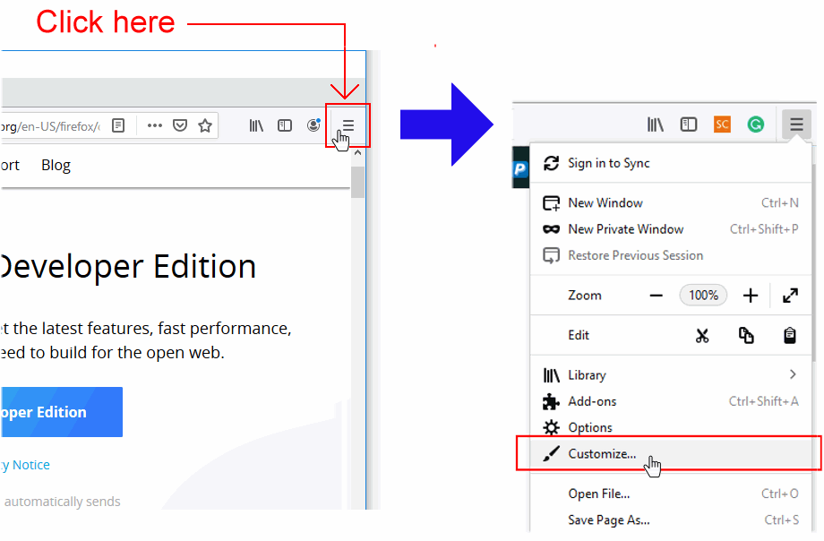
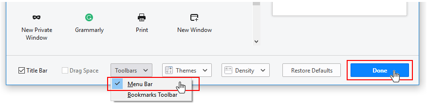
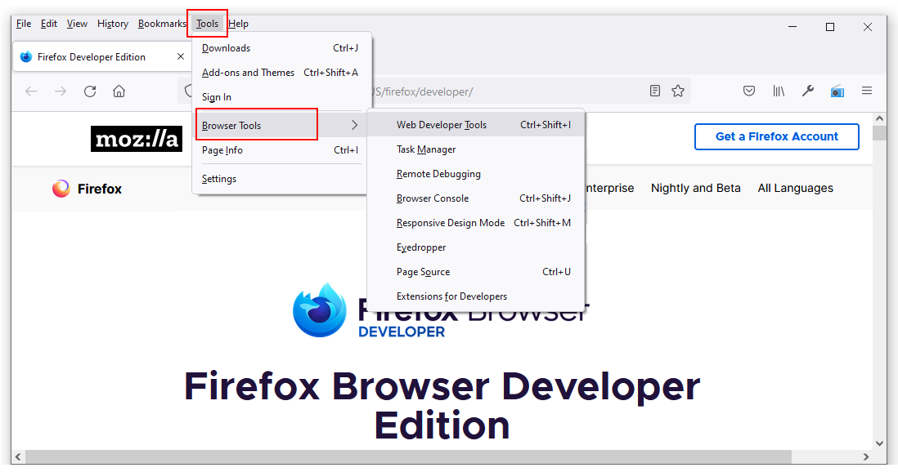
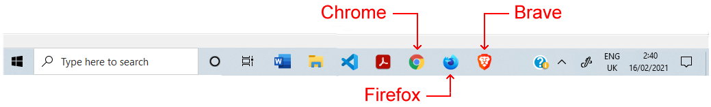

Learning Goals
At the end of this Tutorial, you will be able to:
- Download and install three web browsers: Google Chrome, Brave and Mozilla Firefox Developer Edition.
- Display the Menu Bar in Mozilla Firefox Developer Edition.
- View a web page’s source HTML and CSS files.
About web browsers
A web browser is a software program or app that gives you access to web pages and services on the Internet. With a web browser, you can display text, images and animations, watch videos, listen to audio podcasts and music, exchange emails, and purchase products and services.
In Europe, as of January 2021, the most widely-used web browsers across all devices (desktop, laptop, tablets and mobiles) were as follows:
Google Chrome: 60.42% |
Microsoft Edge: 4.38% |
Apple Safari: 19.86% |
Samsung Internet: 3.92% |
Mozilla Firefox: 6.18% |
Opera: 2.49% |
Default web browsers
Your laptop or desktop computer comes with a default web browser pre-installed:
- Microsoft Edge: This web browser is included with the Microsoft Windows 10 operating system. Since 2016, Microsoft has recommended using Edge as a replacement for the earlier and flawed Internet Explorer browser.
- Safari: This web browser is included in the macOS and iOS operating systems used on Apple computers, tablets and mobile phones.
In these Tutorials, you will instead use three web browsers most popular with web designers and developers: Google Chrome, Brave and Mozilla Firefox Developer Edition.
Installing Google Chrome
Google Chrome is the world’s most popular web browser, in part because it is installed by default on most Android-based mobile phones. Follow these steps to download and install Google Chrome on your computer.
- Use your web browser to go to this web address: https://www.google.com/chrome
- Click the button named Download Chrome.

- Accept the Google Chrome Terms of Service by clicking the Accept and Install button.

- Follow the usual download and installation instructions for your computer.
The Google Chrome web browser will install and then open on your computer.
Installing Brave
Brave is a privacy-focused web browser developed by Brendan Eich, creator of the JavaScript programming language. Both Brave and Google Chrome are based on the same open-source software code, so both work in a largely similar way and support almost all the same browser extensions.
Because Brave blocks ads and website trackers, it can run up to six times faster than Chrome. Follow these steps to download and install it.
- Use your web browser to go to this web address: https://brave.com
- Click the button named Download Brave
 Brave will begin downloading the appropriate version for your computer and operating system. Follow the usual download and installation instructions.
Brave will begin downloading the appropriate version for your computer and operating system. Follow the usual download and installation instructions.
The Brave web browser will install and then open on your computer.
Installing Mozilla Firefox Developer Edition
The Firefox Developer Edition is a version of the Firefox web browser from Mozilla that is tailored for web designers and developers. You can install and use both this and the regular version of Firefox on the same computer.
Follow these steps to download and install Mozilla Firefox Developer Edition.
- Use your web browser to go to this web address: https://www.mozilla.org/en-US/firefox/developer/
- Click the button named Firefox Developer Edition
 Firefox will begin downloading the appropriate version for your computer and operating system.
Firefox will begin downloading the appropriate version for your computer and operating system. - Follow the usual download and installation instructions for your computer.

The Firefox Developer Edition web browser will install and then open on your computer.
Displaying the Menu Bar in Firefox
You will find it easier to use Firebox Developer Edition if you display the Menu Bar that is hidden by default. Here are the steps:
- At the top-right of the Firefox screen, click the hamburger (three lines) icon to display a dropdown menu of options. 
- From this menu, choose the Customize command.
- Along the bottom of the next screen, you can see a number of options. One is a dropdown list named Toolbars.  Click on Toolbars and then click the Menu Bar option to select it.
- When finished, click the Done button at the bottom-right of the screen.
You can now see that the Menu Bar, with its various menus of commands, is visible at the top of the Firefox screen.

As a web designer and developer, the Menu Bar options you will use most frequently will be those available with the Tools | Web Developer command.
Viewing HTML and CSS source files
You can use a web browser to display the underlying HTML and CSS code for a web page. Here is an example:
- Use your web browser to go to this web address: https://www.citizensinformation.ie
- Right-click anywhere on the web page. From the pop-up menu displayed, choose the View Page Source command.
 You can now see the HTML code of the web page in a new tab of your web browser.
You can now see the HTML code of the web page in a new tab of your web browser.

- Web pages are typically linked to one or more stylesheet files that control their visual appearance – such as the position of various elements, their fonts and colours.
Stylesheet files are included near the top of the HTML code in the <head> section, and their file names end in .css. You will also see that they are shown as clickable hyperlinks.
In this example, you can see two stylesheet files, named print1.css and screen1.css.

- Click on the second stylesheet, screen1.css
 You can now see the content of the stylesheet.
You can now see the content of the stylesheet.
When finished, you can close the tabs for the Citizens Information website.
Pinning browsers to your Windows Taskbar
On Windows 10, you can start applications in a variety of ways. For those web browsers you use frequently, it makes sense to add or ‘pin’ them to your Taskbar along the bottom of your Windows desktop. You can then launch any one of them with a single click.
To pin an application, follow these steps:
- Enter the name of the application in the Windows Search Box at the left of the Taskbar.
- When the application name is displayed, right-click on it.
- Choose Pin to taskbar from the list of options displayed.

- Repeat these actions for as many web browsers as you want to pin to your Taskbar.
If future, when you need to launch Brave, Chrome, Firefox or other pinned browsers, you can simply and quickly click the relevant icon on the Taskbar.
